Cat Art Museum A Super-Healing World by Shu Yamamoto
Stepping Into a Painting
Walk into "CATART," Japanese artist Shu Yamamoto's cat-themed exhibition in Pingtung, and the paintings on the wall stop staying flat. We handled the overall spatial planning, color strategy, and the work of turning two-dimensional paintings into three-dimensional installations and immersive scenes for the show.
The Challenge
The collection spans both Eastern and Western art traditions and jumps across visual styles, so the core design question was how to give each group of works its own fitting stage through spatial language, and then link those stages into one visitor journey with a clear rhythm and something memorable at every turn.
Color as the Backbone
Instead of the neutral white-box gallery convention, we split the space into large, saturated color zones, olive green, caramel yellow, lavender, magenta, indigo, arranged in sequence so visitors feel the emotional shift as they move through, without needing to read a single wall text. Arched signage panels at each corner fold the curatorial text directly into the architecture, so there's no separate placard breaking up the walls.
Bringing the Paintings Off the Wall
Select characters from the paintings were reproduced at true scale as large-format figures and sculptures, paired with dedicated lighting and background murals, letting them step out of their frames. For scenes tied to a specific setting, we extended the mural into real furniture, matching hand-painted backdrops and physical props precisely in perspective, light, and shadow so visitors could sit directly into the scene. This translation work was the most technically demanding part of the project, requiring tight coordination between mural painting, custom prop fabrication, and spatial scale.
Each stylistically distinct series also got its own material and formal vocabulary, from geometric 3D display walls, to a backlit installation referencing cathedral stained glass, to a pop-art line-drawing wall and a fountain-based set piece, so every zone carries its own identity instead of repeating one display formula.
The entire second floor was planned around a dimensional photo zone concept: every corner and leftover pocket of space was designed in advance as its own photo point, turning the circulation path into a continuous, uninterrupted experience rather than a plain passageway.
Light and Flow
Track-mounted spotlighting runs throughout, with angle and color temperature adjusted individually for each artwork and installation, keeping the overall space low-lit while the content pops off the walls. The route is segmented by wall corners, so visitors keep running into a sense of discovery as they move through.
What Visitors Actually Do There
Every zone has become a natural hotspot for visitor photos since opening, and social media reach has followed. The design set out to let visitors, once inside, do more than look at paintings: they get pulled gently into the process of becoming a cat themselves: walking into the paintings, exploring the giant stained-glass window of "Cat Light," visiting the cats-only "Cat Palace," and wandering through scenes exclusive to Pingtung: cats napping on Dawan Island, a cat fountain, a kitten's birth, a cat café, a starlit cat night. Each zone reinterprets the world through a cat's eyes, languid, playful, unbound, and no art-historical knowledge is needed to enjoy any of it.
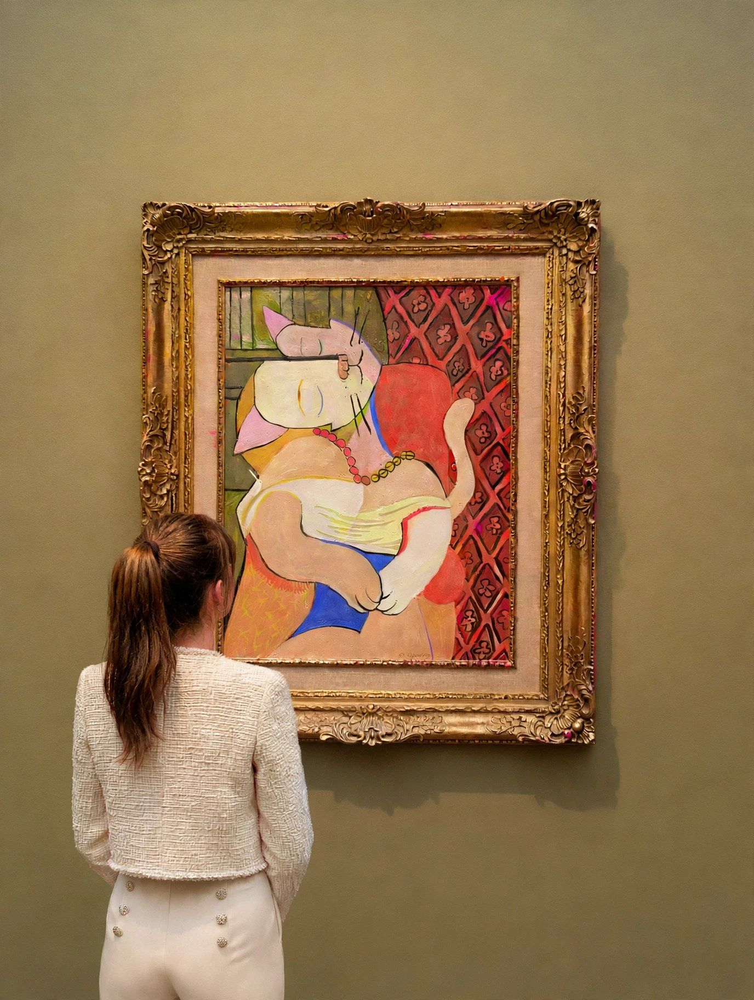
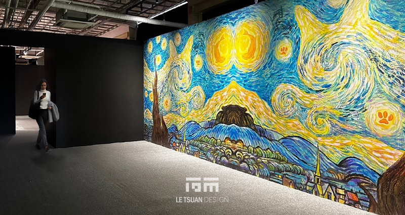
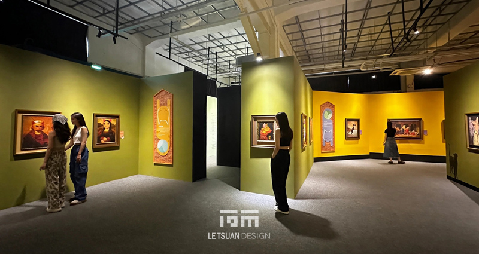
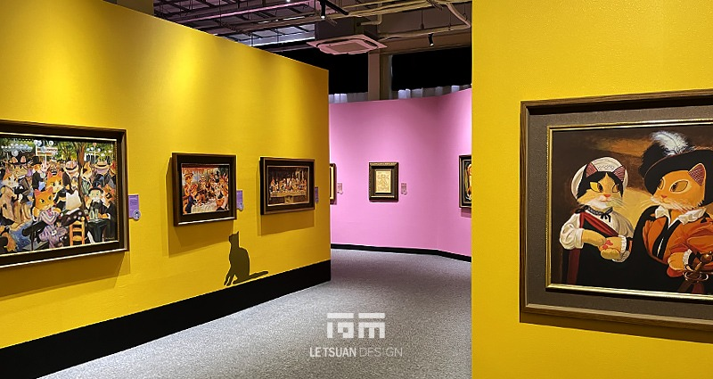
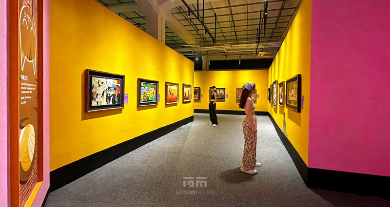
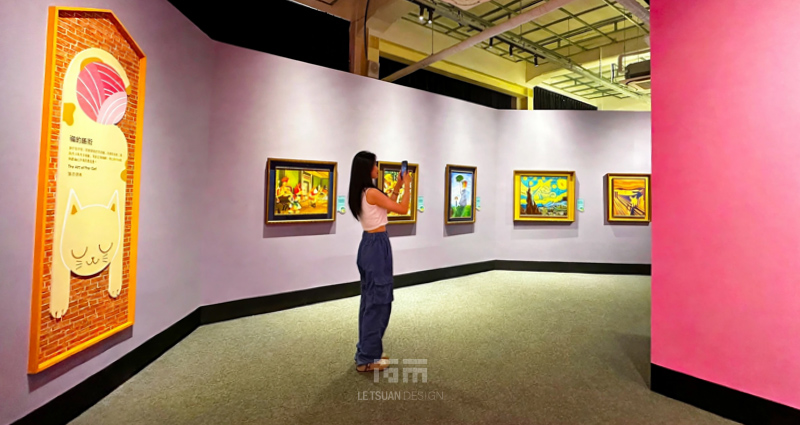
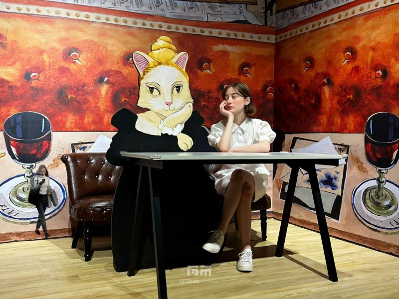
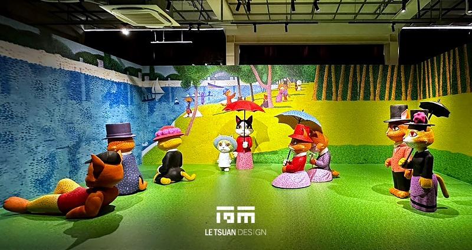
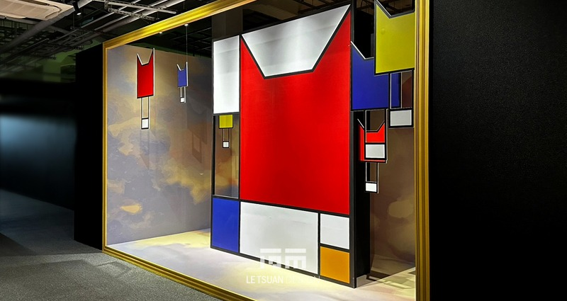
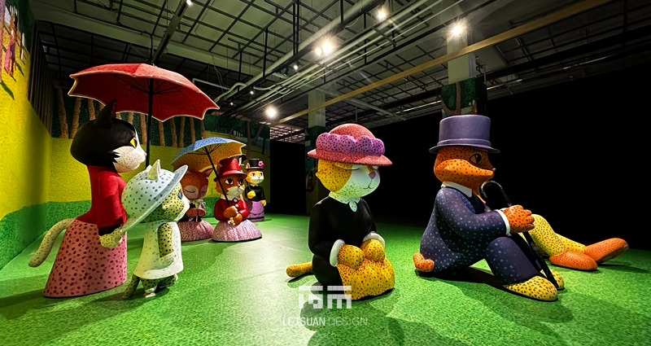
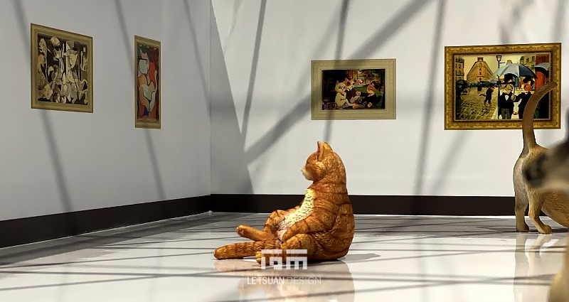